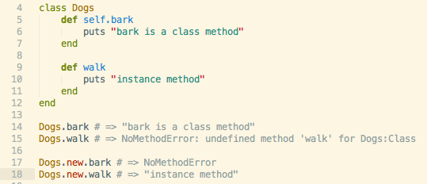
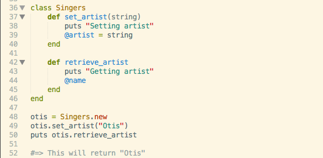
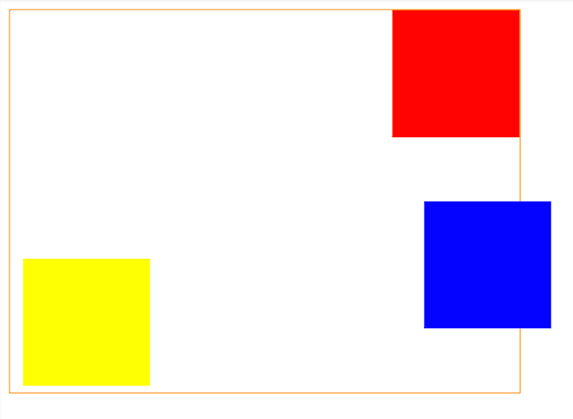
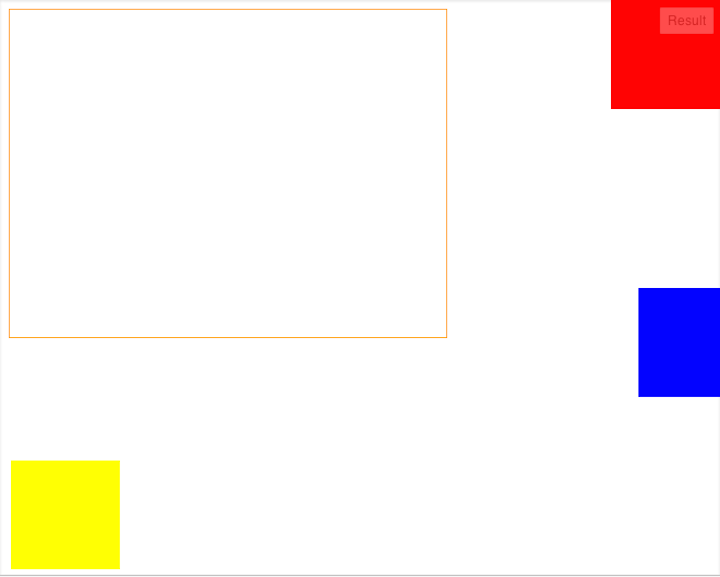
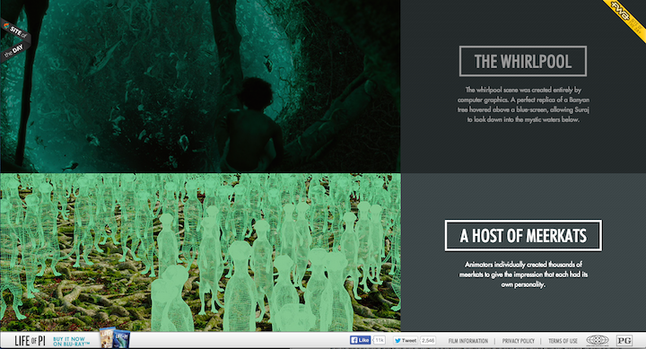

Week 7 - Technical
Sept 1st
SQL vs. NoSQL
This prompt was a little tough for me to wrap my head around with minimal experience with SQL and no experience with noSQL. I found a lot of articles, gathered information about it and below you'll find what I learned. SQL is a Relational DataBase Management System with a manin focus on ACID. What does that mean? Atomicity - Each transaction is atomic. Consistency - Every transaction faces a consistent rule set. Isolation - All transaction should be separate, and none should interfere with any other. Durability - Once a transaction is committed, it remains so. Pretty much the first application that came to my mind when thinking about one that would follow the ACID model was a banking application, like my BankOfAmerica app on my phone. This app seems to need a strict relational database. Another application that came to mind was my Kaiser Permanente site that requires pretty intense login information and separates the application by patient. Some of the main points of usefulness I found for RDBMS are: typed columns, structured data, broad and unrestrained queries, consistent way of accessing data. These are geared towards joins, filters, and aggregations of data. For larger, distributed data, it may not be the best choice to implement a RDBMS. Google and Amazon for example had to switch to a more flexible and agile database system to accommodate their needs for scalability, high availability, costs, and distributed data. So how do NoSQL work? Objects of data are typically retrieved using a unique ID. The main differences I noticed were that they do not support complicated queries and do not use schema. This means that it involves denormalized data requiring users to maintin their own data relationships in their code. NoSQL follows the opposite model of ACID, called BASE. Basically available - guaranteed availability Soft-State - The state of the system may change even without a query because nodes can be updated. Eventually Consistent - The system become more consistent over time. To conclude, NoSQL is good for dealing with growing lists of elements, for example - twitter posts and blog entries. It has the ability to store and retrieve large amounts of data, and has less functionality but higher performance than SQL. SQL should be used in applications requiring structured data and more functionality but NoSQL can be used to store both structured and unstructured data.
Week 6 - Techincal
Aug 23rd
Variables are used as pointers to refer to pieces of data that can be used throughout a program, as specified by the creator. In more literal terms, this just means we can use them to store values that we'll want to use later on. These variables can be distinguished by special characters, or uppercase/lowercase characters.
Some variables in ruby have a sigil before them. Sigils are special characters that denote a variables scope. In other languages, sigils are sometimes used to denote a data type. The two sigils used in ruby are $ and @.
The different types of variables in Ruby do note denote a data type, but a scope. Each type of variable in ruby can hold any data type. The scope of a variable refers to the range that the variable can be referenced.
What kinds of variables does Ruby support?
Ruby supports the following five types of variables:
Local variables: These are the most frequently used type of variables in Ruby. Local variables are only valid inside the method, block, or module that they were defined within. Local variables should be used when they are only needed at one point within a program, for example, within one method.
Class variables: Class variables are valid for all instances of the class they were defined within. Class variables begin with the double @@ sigils. Class variables should be used if a variable will be needed within every instance of a class, but these are rarely needed and should be used sparingly if there is another type of variable that can fulfill the creators needs within a smaller scope.
Global variables: Global variables begin with the $ symbol. These are valid everywhere within the program they are defined within. These variables should not be used frequently within programs. Global variables can make it difficult to isolate bugs and can also indicate that a program has be strategically planned or thought through.
Instance variables: Instance variables begin with the @ symbol.These variables are valid inside of an object, which means that each method within the object can "see" this variable and use it. If you need a variable to be visible across function calls, but only within a particular class instance, and instance variable should be used.
Constants: Constants begin with an uppercase letter, but common practice is to capitalize the entire variable name. Constants that are defined outside of a class or module can be accessed globally, but constants defined within a class or module can be accessed from anywhere within that class/module. Constants cannot be defined within methods. Constants can be used when you want to have a variable that holds a constant value throughout the duration of a program.
Week 5 - Techincal
Aug 21st
Example of instance methods
I will be referring to the example above to demonstrate how you can use instance methods versus how you can use class methods. To begin with, I created a class called "Dogs". I first created a new method within Dogs called bark, which is called on "self". The intention of this method is that when you call Dogs.bark outside of the class, it will put the string "bark is a class method". When I tested this out on line 14, as you can see, this function works and I got the string I wanted. Next within the class I created an instance method which was defined without using self. When I tried calling this method outside of the class on line 15, I received a NoMethodError. It looks like my method 'walk' is undefined. The reason my instance method fails here is because it was attempting to call an instance method on the class itself rather than an instance of the class. So what does that mean? The key difference between these two types of methods is that instance methods only work when you create and new instace of the class to use them, which requires calling class.New. Class methods can be executed on the class itself, without creating an instance of the class. You can see on lines 17 and 18 what happens when you try to call both of my methods on a new instance of the class "Dogs". Now we have an error on the class method, but the instance method does just what I wanted it to do.
Example of instance variables

The next example here is to demonstrate instance variables. Here I use a class called "Singers" to demonstrate how instance variables can be used. In this example, I used them to demonstrate how they can be used to set, and retrieve values stored in instance variables.
Instance variables are useful because they prevent the hard-coding of values into each object, because often different instances of a class require the same variable, take price for example, but they will need to represent different values for each instance of an object. Instance variables allow each object to remember a state. They function the same way that other variables function. Instance variables differ from class variables in 3 ways:
1. They begin with an @ sign
2. They are only visible to self(the object they belong to)
3. When initialized in a method definition within a class, it can be used freely amongst the other methods within the same class.
Unlike local variables, instance variables retain values assigned to them even after the method it was initialized on has terminated.
Week 4 - Technical
Aug 7th
Enumerable#map
The map method can be used if you want to return a transformed version of each element in a collection. The map method takes an array, applies a function to each element, and returns a new array with the results. An example of when to use map would be as follows: [1,2,3].map { |n| n * n } this returns [1,4,9] If you use map, this returns a new array, but if you use map!, this mutates the original array. Consider you have an array of fruits - fruits = ['peach', 'mango', 'cherry'] and you call fruits.map {|fruit| fruit.capitalize} in this case, fruits still contains the same array ['Peach', 'Mango', 'Cherry'] if instead you were to call fruits.each {|fruit| fruit.capitalize} your original array would remain the same because each does not alter the array it is called on. fruits = ['peach', 'mango', 'cherry']
Week 3 - Technical
Aug 5th
Popularity of Javascript
Javascript is so popular for web-development because it is the only language embedded in Browsers, and is supported by every browser. Javascript has capabilities to deliver rich, dynamic web content, it's relatively lightweight and easy to use. It also has an extensive list of libraries and frameworks which make development in Javascript faster, easier, and more powerful. Javascript is a client side language and reduces the load time on server. It has also gained popularity with the development of node.js which is basically javascript, but for back-end development. In the past, front-end javascript developers had to use another language such as Java to develop the server side of their apps. I personally like Javascript because it allows for code testing in the console of the page as you are working.
Although I am not at a point in my development experience using javascript that I can describe the limitations of Javascript from my own experience, I researched and found a few limitations. First of all, Javascript has been known to pose security issues. The second issue is that is has rendering issues depending on the engine being used. Various engines can render Javascript in varying ways, resulting in inconsistencies in user interface and functionality of the same site when used in different browsers. This causes more developer testing on different browsers which can be time consuming.
Week 2 - Technical
July 23rd
Static, Relative, Absolute and Fixed positioning
In order to test everything I learned about through reading different articlies and tutorials, I opened up JSFiddle
To begin with, positioning does not cascade. This means that if you set a parent element's position to either Relative, Absolute, or Fixed, its child elements will not have this positioning unless you explicity set the positioning for them.
Static positioning is the default state of elements on a page.
Relative: This means relative to the element's default position. If you do not define top, left, bottom, or right for the element, it will behave like a statically positioned element. If you have 3 boxes relatively positioned without defining top, left, bottom or right, they will appear as so -
If you add a top: 50px; to the red div it will shift down 50px from its original position like this -
Divs with relative positioning will appear on top of statically positioned divs, in this case, the yellow box is now halfway covered by the red div. Another trick you can do is to set a container div to relative, then position its child divs as absolute. When you do this the children will be positioned absolutely relative to the parent div rather than from the page. It will look like this -

If the parent div is positioned as static, the absolutely positioned child divs will instead do the default of being positioned absolutely in terms of the page, instead of the parent div. It will look like this -

Absolute: Absolute positioning means that the element will be positioned relative to the page itself, exactly where you set it to be placed, using top, left, right, and bottom. If any of the child elements parents or grandparent elements are positioned with relative or absolute positioning, the element will be placed relatively to that parent element, like I showed in the last example.
Fixed: Elements with fixed positioning are placed relatively to the viewport. This can be used for example as a fixed header or sidebar that is visible regardless of where the user scrolls.This can be useful in some cases in order to make page navigation accessible at all times, but is a less common positioning effect. It can be inconvenient in terms of responsive design as it might overlap and limit readability of a page when a user is accessing it from a mobile device, or any sort of smaller viewport.
Week 1 - Techincal
July 19th
Coin
I think this site is very visually appealing. You can immediately figure out what their product offering is and how it works. The website uses few words to explain the product and makes its functionality more intuitive. When I first look at the site, my eye is drawn to the video in the center of the page, which shows how the product works. When stepping back, I notice the background image of the site. I think the video being in the center of the page is very effective in helping the company achieve their main goal, which is getting the user to buy their product. Instead of trying to convince you of the product by making you read about it, you can watch how convenient it can make your life by watching the video. I think the most important part of the page is the interactivity that occurs when you scroll down the page. This website and product solves the problem that people have relating to the clutter of things that everyone needs to carry around such as -- keys, sunglasses, credit cards, cash, etc. Their product compacts your money into one place so you have a couple things less to keep track of and worry about. The content of this page demonstrates the solution very clearly and creatively. One of my favorite parts about the page is the bright coloring that tells a story in a way along with pictures and moving images. I like the section that shows four credit cards being combined into one, this really emphasizes how useful their product is. By looking at the homepage you can immediately find content and information about the product you were looking for. You can also see the pre-order now button at the top of the page, and various spots throughout the page. If you are heading to the page to buy the product immediately, this can be easily done. Browsing through the content of the site is the best part of this site, it is very interactive and fun to scroll through and see how the product works. I like that I wasn't forced to read through block text to figure out what the product can do for me. This is not really a site you can spend a lot of time on because you quickly figure out its purpose. I would not get bored on this site. Looking at it is an enjoyable experience. The site sells a credit card that can hold all of your credit cards in one single card. Yes, I pre-ordered the product, they got me.
Spotify
Like Coin, Spotify uses parallax design on their site creating a 3D-like depth effect. While scrolling through the page, the user gains contol over the movement of multiple layers of information on the page. The page toggles between showing images and information, but this only occurs at the speed the user moves their fingers across the scroll pad. In terms of user design, this site does a great job at drawing users into the site and making the page more interactive. This is also an advantage for them because it makes the information they are showing seem more like a story, and thus makes them browse the site longer to see how it works. I think it also shows the users what they should be doing next in an intuitive way. They start at the top of the page and by the time they have hints about what the company's product is, they get to the bottom that has download options for site users who want to see what else the company has to offer. The strongest adjective I could give this site would be "cool", but I would also call it interactive, elegant, complex, and fun.
Life of Pi Journey
This is one of my favorite sites because it has a storytelling effect to it and the effects used on the site are very reminiscent of the effects used in the movie. Although I think the site is really cool, I do not like this website as much as the first two I mentioned. This website feels like a game more than anything else and is pretty fun to scroll through. My eyes are drawn mostly to the animation effects used, but they designer does a good job of guiding your eyes from one scene to the next throughout the page. The entire page is aesthetically pleasing but does not show much written content, more so just images. The purpose of the site is to advertise the movie and give users a sense of what the movie is like. It is fairly easy to scroll through the content of the site, the mouse does get stuck at times but I'm guessing this is just due the amount of images shown on the page. The site is used to get users interested in watching the movie, I did end up watching it but thought the website was cooler than the actual movie.